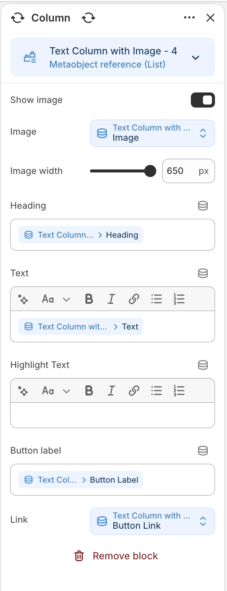
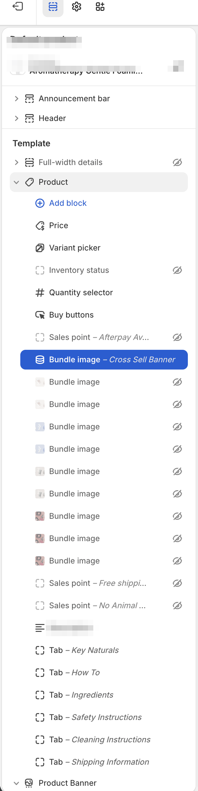
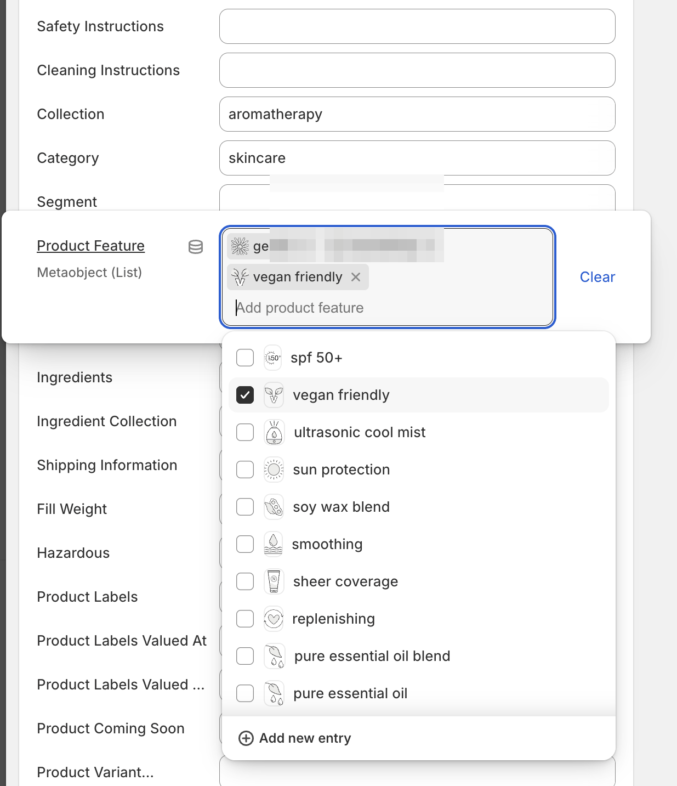

// case study
Shopify storefront customisation for an established global retail brand
The client is under a confidentiality arrangement, so the brand isn't named here and screenshots are sanitised. Happy to talk through the work in more detail on a call.
- Shopify · Online Store 2.0
- Liquid
- Shopify CLI
- Metafields & dynamic sources
- JavaScript / CSS
- Git
context
An established global retail brand selling through physical retail and a Shopify storefront. The store runs on a commercial theme that needed substantial customisation — well beyond what theme settings allow — while staying maintainable and safe to update.
role
Sole developer on the theme work: scoping, build, and QA. The theme codebase is version-controlled in Git, developed locally with the Shopify CLI, and tested against a development store before changes reach the live storefront.
work
- Custom Liquid sections and blocks with schema settings, so the marketing team can rearrange and edit content in the theme editor without developer involvement.
- Metafield definitions modelling the brand's structured product content, connected to templates through dynamic sources.
- Template-level changes across product and collection pages — JSON templates and section groups rather than one-off hacks.
- Front-end refinements in JavaScript and CSS, consistent with the brand's existing visual language.
- A repeatable dev workflow: feature branches, CLI-driven theme previews, and structured handover notes for each change.



challenge
The trickiest part wasn't the Liquid — it was environment parity. Metafield-driven dynamic sources that behaved correctly in production resolved differently against the development store, where metafield definitions and data didn't match. Diagnosing that meant separating theme-code issues from store-data issues, aligning metafield definitions across environments, and adjusting the workflow so changes are validated against representative data before release.
It's a good example of what senior experience buys on Shopify projects: knowing when the bug is in the code, and when it's in the platform configuration around the code.
outcome
An actively maintained, version-controlled theme the client's team can safely edit through the theme editor, with development continuing as an ongoing engagement led by 15+ years of production delivery experience.